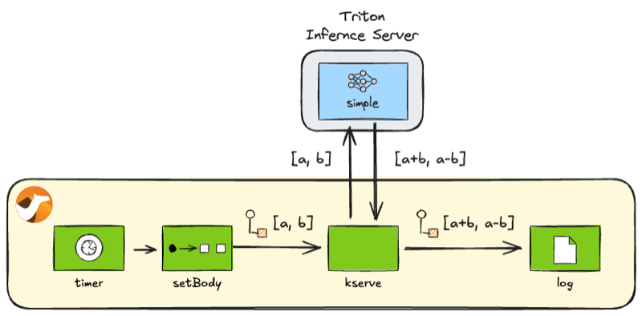

Introduction
In the previous blog posts (camel-tensorflow-serving and camel-torchserve), we discussed the recent release of Apache Camel 4.10 LTS, which introduced three new AI model serving components. 1
- TorchServe component
- TensorFlow Serving component
- KServe component
We previously wrote about the TorchServe and TensorFlow Serving components. This post introduces the KServe component, concluding the series.
KServe Component
KServe is a platform for serving AI models on Kubernetes. KServe defines an API protocol enabling clients to perform health checks, retrieve metadata, and run inference on model servers. This KServe API 2 allows you to interact uniformly with KServe-compliant model servers. The Camel KServe component enables you to request inference from a Camel route to model servers via the KServe API.
Preparation
Before diving into the sample code for the Camel KServe component, let’s set up the necessary environment.
First, let’s install the Camel CLI if you haven’t installed it yet:
INFO: If JBang is not installed, first install JBang by referring to: https://www.jbang.dev/download/
jbang app install camel@apache/camel
Verify the installation was successful:
$ camel --version
4.10.2 # Or newer
Launching the server with pre-deployed models
Next, let’s set up a KServe-compliant model server on your local machine. To experiment with the KServe component, you’ll need a model server that supports the KServe Open Inference Protocol V2. Several model servers are available, such as OpenVINO and Triton. In this blog post, we will use the Triton Inference Server Docker image. The Triton Inference Server image supports not only amd64 but also arm64, making it accessible for macOS users as well.
Since the KServe API doesn’t include an operation for registering models, we’ll load the model beforehand when starting the server. In this blog post, we will use the demo model simple provided in the Triton Inference Server repository. Details about this model are provided later in the Inference section.
Download the entire simple directory from the Triton Inference Server repository and place it within a models directory.
TIPS: To download files under a specific directory in a GitHub repository efficiently, you can clone the entire repository. However, using VS Code for the Web is often easier: with the GitHub repository displayed, press . on your keyboard or change the URL from github.com to github.dev. This opens the repository directly in VS Code within your browser. Then, locate the directory you wish to download and select Download from the context menu (right-click). Select a local directory, and you can download all files from the chosen repository directory into it.
Once the simple directory is downloaded and placed under models, start the container from the directory containing the models folder using the following command:
docker run --rm --name triton \
-p 8000:8000 \
-p 8001:8001 \
-p 8002:8002 \
-v ./models:/models \
nvcr.io/nvidia/tritonserver:25.02-py3 \
tritonserver --model-repository=/models
INFO: The Triton Inference Server Docker image nvcr.io/nvidia/tritonserver is quite large (approx. 18.2GB), so pulling the image for the first time might take some time.
Server and model operations
INFO: If you’re primarily interested in learning how to perform inference with Camel KServe, feel free to skip this section and proceed directly to the Inference section.
The KServe Open Protocol V2 defines management operations other than inference, categorised as follows:
- Server Operations
- Readiness and Liveness Checks (Server Ready / Server Live API)
- Metadata Retrieval (Server Metadata API)
- Model Operations
- Readiness Check (Model Ready API)
- Metadata Retrieval (Model Metadata API)
Let’s examine how to invoke each of these operations from a Camel route.
Server readiness check
To check if the server is running and ready from a Camel route, use the following endpoint:
kserve:server/ready
server_ready.java
//DEPS org.apache.camel:camel-bom:4.10.2@pom
//DEPS org.apache.camel:camel-core
//DEPS org.apache.camel:camel-kserve
import org.apache.camel.builder.RouteBuilder;
public class server_ready extends RouteBuilder {
@Override
public void configure() throws Exception {
from("timer:server-ready?repeatCount=1")
.to("kserve:server/ready")
.log("Ready: ${body.ready}");
}
}
Execute it using the Camel CLI:
camel run server_ready.java
Upon successful execution, you can verify the server readiness status:
Ready: true
Server liveness check
To check if the server is live from a Camel route, utilise the following endpoint:
kserve:server/live
server_live.java
//DEPS org.apache.camel:camel-bom:4.10.2@pom
//DEPS org.apache.camel:camel-core
//DEPS org.apache.camel:camel-kserve
import org.apache.camel.builder.RouteBuilder;
public class server_live extends RouteBuilder {
@Override
public void configure() throws Exception {
from("timer:server-live?repeatCount=1")
.to("kserve:server/live")
.log("Live: ${body.live}");
}
}
Execute it using the Camel CLI:
camel run server_live.java
Upon successful execution, you can verify the server liveness status:
Live: true
Retrieving server metadata
To retrieve server metadata from a Camel route, use the following endpoint:
kserve:server/metadata
server_metadata.java
//DEPS org.apache.camel:camel-bom:4.10.2@pom
//DEPS org.apache.camel:camel-core
//DEPS org.apache.camel:camel-kserve
import org.apache.camel.builder.RouteBuilder;
public class server_metadata extends RouteBuilder {
@Override
public void configure() throws Exception {
from("timer:server-metadata?repeatCount=1")
.to("kserve:server/metadata")
.log("Metadata:\n${body}");
}
}
Execute it using the Camel CLI:
camel run server_metadata.java
Upon successful execution, you can retrieve the server metadata:
Metadata:
name: "triton"
version: "2.55.0"
extensions: "classification"
extensions: "sequence"
extensions: "model_repository"
extensions: "model_repository(unload_dependents)"
extensions: "schedule_policy"
extensions: "model_configuration"
extensions: "system_shared_memory"
extensions: "cuda_shared_memory"
extensions: "binary_tensor_data"
extensions: "parameters"
extensions: "statistics"
extensions: "trace"
extensions: "logging"
Model readiness check
To check if a specific model is ready for inference, use the following endpoint:
kserve:model/ready?modelName=simple&modelVersion=1
model_ready.java
//DEPS org.apache.camel:camel-bom:4.10.2@pom
//DEPS org.apache.camel:camel-core
//DEPS org.apache.camel:camel-kserve
import org.apache.camel.builder.RouteBuilder;
public class model_ready extends RouteBuilder {
@Override
public void configure() throws Exception {
from("timer:model-ready?repeatCount=1")
.to("kserve:model/ready?modelName=simple&modelVersion=1")
.log("Ready: ${body.ready}");
}
}
Execute it using the Camel CLI:
camel run model_ready.java
Upon successful execution, you can verify the model readiness status:
Ready: true
Retrieving model metadata
Similar to TorchServe and TensorFlow Serving, understanding the input and output signatures of an AI model is crucial for interacting with it effectively. To achieve this, you need to retrieve the model’s metadata.
Since metadata retrieval is typically a one-time operation, you can inspect the model signatures in JSON format by calling the following REST API (for the simple model):
http://localhost:8000/v2/models/simple/versions/1
To retrieve model metadata from within a Camel route, use the following endpoint:
kserve:model/metadata?modelName=simple&modelVersion=1
model_metadata.java
//DEPS org.apache.camel:camel-bom:4.10.2@pom
//DEPS org.apache.camel:camel-core
//DEPS org.apache.camel:camel-kserve
import org.apache.camel.builder.RouteBuilder;
public class model_metadata extends RouteBuilder {
@Override
public void configure() throws Exception {
from("timer:model-metadata?repeatCount=1")
.to("kserve:model/metadata?modelName=simple&modelVersion=1")
.log("Metadata:\n${body}");
}
}
Execute it using the Camel CLI:
camel run model_metadata.java
Upon successful execution, you can retrieve the model metadata:
Metadata:
name: "simple"
versions: "1"
platform: "tensorflow_graphdef"
inputs {
name: "INPUT0"
datatype: "INT32"
shape: -1
shape: 16
}
inputs {
name: "INPUT1"
datatype: "INT32"
shape: -1
shape: 16
}
outputs {
name: "OUTPUT0"
datatype: "INT32"
shape: -1
shape: 16
}
outputs {
name: "OUTPUT1"
datatype: "INT32"
shape: -1
shape: 16
}
Inference
Let’s perform inference on a model using KServe. Here, we’ll use the simple model to perform a basic calculation.
As observed in the Retrieving model metadata section, the simple model accepts two INT32 lists of size 16 (INPUT0 and INPUT1) as input and returns two INT32 lists of size 16 (OUTPUT0 and OUTPUT1) as output. This model calculates the element-wise sum of INPUT0 and INPUT1, returning the result as OUTPUT0, and calculates the element-wise difference, returning it as OUTPUT1.
In the example code below, we provide the following inputs to the model:
INPUT0 = [1, 2, 3, 4, 5, 6, 7, 8, 9, 10, 11, 12, 13, 14, 15, 16]
INPUT1 = [0, 1, 2, 3, 4, 5, 6, 7, 8, 9, 10, 11, 12, 13, 14, 15]
Consequently, we expect to receive the following outputs:
OUTPUT0 = [1, 3, 5, 7, 9, 11, 13, 15, 17, 19, 21, 23, 25, 27, 29, 31]
OUTPUT1 = [1, 1, 1, 1, 1, 1, 1, 1, 1, 1, 1, 1, 1, 1, 1, 1]

Calling the simple model
Use the following endpoint for inference:
kserve:infer?modelName=simple&modelVersion=1
infer_simple.java
//DEPS org.apache.camel:camel-bom:4.10.2@pom
//DEPS org.apache.camel:camel-core
//DEPS org.apache.camel:camel-kserve
import java.nio.ByteOrder;
import java.util.ArrayList;
import java.util.stream.Collectors;
import java.util.stream.IntStream;
import org.apache.camel.Exchange;
import org.apache.camel.builder.RouteBuilder;
import com.google.protobuf.ByteString;
import inference.GrpcPredictV2.InferTensorContents;
import inference.GrpcPredictV2.ModelInferRequest;
import inference.GrpcPredictV2.ModelInferResponse;
public class infer_simple extends RouteBuilder {
@Override
public void configure() throws Exception {
from("timer:infer-simple?repeatCount=1")
.setBody(constant(createRequest()))
.to("kserve:infer?modelName=simple&modelVersion=1")
.process(this::postprocess)
.log("Result[0]: ${body[0]}")
.log("Result[1]: ${body[1]}");
}
ModelInferRequest createRequest() {
var ints0 = IntStream.range(1, 17).boxed().collect(Collectors.toList());
var content0 = InferTensorContents.newBuilder().addAllIntContents(ints0);
var input0 = ModelInferRequest.InferInputTensor.newBuilder()
.setName("INPUT0").setDatatype("INT32").addShape(1).addShape(16)
.setContents(content0);
var ints1 = IntStream.range(0, 16).boxed().collect(Collectors.toList());
var content1 = InferTensorContents.newBuilder().addAllIntContents(ints1);
var input1 = ModelInferRequest.InferInputTensor.newBuilder()
.setName("INPUT1").setDatatype("INT32").addShape(1).addShape(16)
.setContents(content1);
return ModelInferRequest.newBuilder()
.addInputs(0, input0).addInputs(1, input1)
.build();
}
void postprocess(Exchange exchange) {
var response = exchange.getMessage().getBody(ModelInferResponse.class);
var outList = response.getRawOutputContentsList().stream()
.map(ByteString::asReadOnlyByteBuffer)
.map(buf -> buf.order(ByteOrder.LITTLE_ENDIAN).asIntBuffer())
.map(buf -> {
var ints = new ArrayList<Integer>(buf.remaining());
while (buf.hasRemaining()) {
ints.add(buf.get());
}
return ints;
})
.collect(Collectors.toList());
exchange.getMessage().setBody(outList);
}
}
Execute it using the Camel CLI:
camel run infer_simple.java
Upon successful execution, you should observe the following results. The calculation results match the explanation provided earlier.
Result[0]: [1, 3, 5, 7, 9, 11, 13, 15, 17, 19, 21, 23, 25, 27, 29, 31]
Result[1]: [1, 1, 1, 1, 1, 1, 1, 1, 1, 1, 1, 1, 1, 1, 1, 1]
Summary
Concluding our series on AI model serving components, this post provided a brief overview of the KServe component’s functionality, one of the AI model serving components introduced in the latest Camel 4.10 LTS release.
With the addition of the KServe component, alongside TorchServe and TensorFlow Serving, Camel now supports most mainstream AI model servers. This prepares the ground for building integrations that combine Camel with these model servers.
Furthermore, KServe is emerging as the de facto standard API for model serving within Kubernetes-based MLOps pipelines. This enables you to leverage Camel integrations as the application layer for AI models within AI systems built on MLOps platforms such as Kubeflow.
Explore the possibilities of intelligent integration using Apache Camel AI.
The sample code presented in this blog post is available in the following repository:
https://github.com/megacamelus/camel-ai-examples
-
The Camel TorchServe component has been available since version 4.9. ↩︎